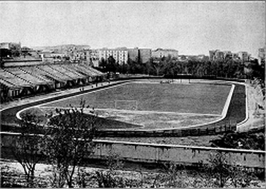
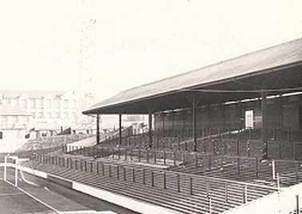
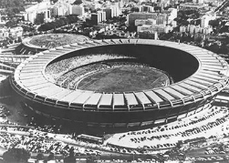
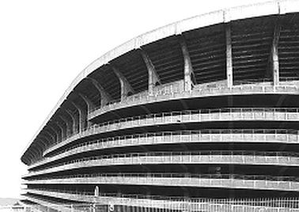
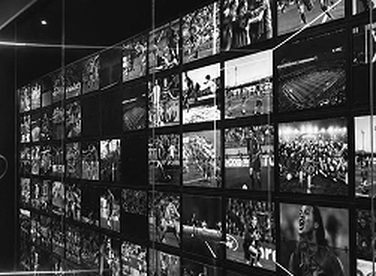
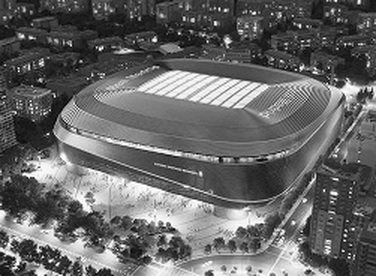

UN VIAGGIO NEL TEMPO
LA STORIA
Dalle prime strutture alle moderne arene.
L’evoluzione degli stadi racconta l’evoluzione
del calcio e della società che lo vive.
-
1890
LE ORIGINI
I primi stadi moderni nascono in Europa, con strutture semplici.

↗ -
1920
IL PUBBLICO
Le tribune si sviluppano e il tifo diventa parte centrale dell’esperienza.

↗ -
1950
GRANDI ARENE
Stadi sempre più capienti, simbolo di rinascita e prestigio internazionale.

↗ -
1980
MODERNIZZAZIONE
Nuovi materiali, sicurezza e comfort cambiano l’architettura degli impianti.

↗ -
2000
LO STADIO COME ESPERIENZA
Oltre il calcio: musei, negozi, ristoranti e servizi per i tifosi.

↗ -
OGGI
IL FUTURO
Sostenibilità, tecnologia e stadi multifunzionali per una nuova generazione.

↗


“Gli stadi raccontano il nostro tempo”